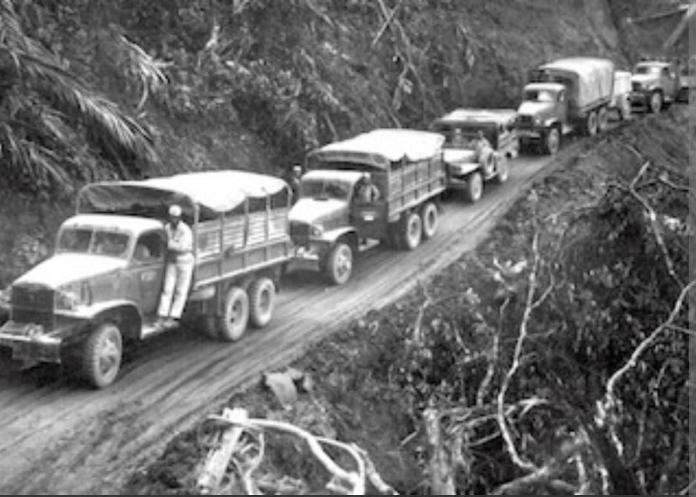
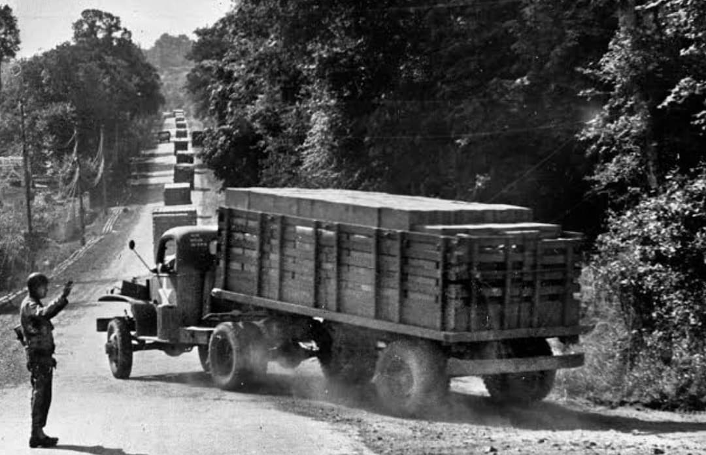
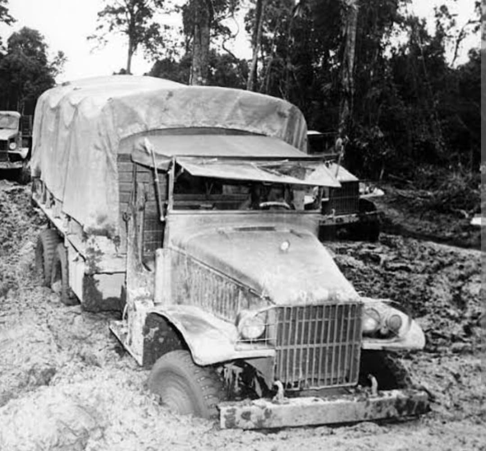
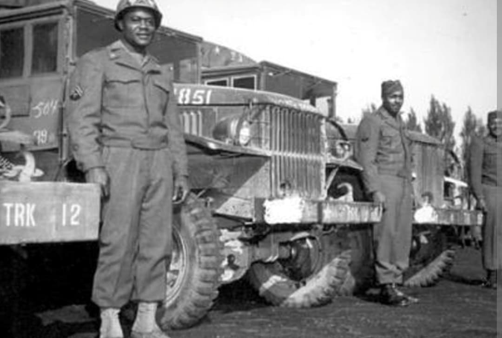
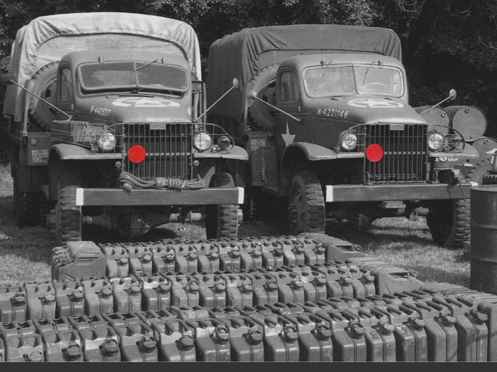

À l’été 1944, après le Débarquement en Normandie, les armées alliées avancent rapidement vers Paris, la Belgique puis l’Allemagne. Cette progression fulgurante pose un problème majeur : les unités combattantes consomment des quantités énormes d’essence, de munitions et de ravitaillement, bien au-delà des capacités des infrastructures classiques.
Pour éviter l’arrêt brutal de l’offensive, l’armée américaine met en place le Red Ball Express, un gigantesque réseau de camions de ravitaillement fonctionnant jour et nuit. Ce système logistique devient l’une des clés de la réussite de la campagne de France.
Le Red Ball Express est officiellement lancé le 25 août 1944. Son objectif est simple : acheminer en continu carburant, munitions, nourriture et matériel depuis les ports et dépôts arrière vers les unités en première ligne.
Le nom “Red Ball” vient du symbole peint sur les camions : un grand cercle rouge. Ce marquage indique que ces véhicules bénéficient d’une priorité absolue sur les routes. Des panneaux spécifiques signalent les itinéraires réservés : “Red Ball Route – Military Priority”.
Les camions du Red Ball Express ne doivent jamais être ralentis. Ils sont la colonne vertébrale de l’offensive alliée.

Le Red Ball Express repose principalement sur le camion GMC CCKW 6x6, surnommé “Deuce and a Half” (deux tonnes et demie). Ce véhicule robuste est capable de transporter jusqu’à 2,5 tonnes de charge sur des routes souvent endommagées.
Ces camions roulent :
Les convois circulent parfois pare-chocs contre pare-chocs, formant de véritables autoroutes de camions à travers la France.

L’armée américaine est encore organisée selon des règles de ségrégation raciale en 1944. Les soldats noirs servent dans des unités séparées et sont souvent cantonnés à des tâches de soutien.
Dans le Red Ball Express, environ 75 % des chauffeurs sont des soldats afro-américains. Ils conduisent les camions dans des conditions extrêmement dangereuses :
Leur contribution est essentielle pour maintenir l’offensive alliée. Le Red Ball Express devient un symbole du rôle crucial des soldats afro-américains dans la victoire.

Les chauffeurs du Red Ball Express enchaînent des journées de 20 heures de conduite, suivies de quelques heures de sommeil seulement. Les camions transportent :
Sans ce flux constant de ravitaillement, les divisions américaines auraient été contraintes de ralentir ou d’interrompre leur progression. Le Red Ball Express est littéralement le système circulatoire de l’armée américaine en France.

Le Red Ball Express fonctionne du 25 août au 16 novembre 1944. À partir de l’automne, la remise en service des ports (Cherbourg, Le Havre, Anvers) et des lignes ferroviaires permet de transférer une partie du ravitaillement vers des moyens plus classiques.
Le système de camions est progressivement réduit, mais son rôle pendant ces trois mois reste déterminant. Il a permis de soutenir une offensive rapide et de maintenir la pression sur les forces allemandes.
Le Red Ball Express est longtemps resté une histoire méconnue du grand public. Pourtant, il représente un exploit logistique sans précédent et un témoignage du courage des chauffeurs, en particulier des soldats afro-américains.
Aujourd’hui, le Red Ball Express est étudié comme un exemple majeur de logistique militaire et comme un épisode important de l’histoire des droits civiques, montrant que des soldats discriminés ont joué un rôle central dans la victoire alliée.
Page du Musée HOP WW2 – Section États-Unis & Logistique